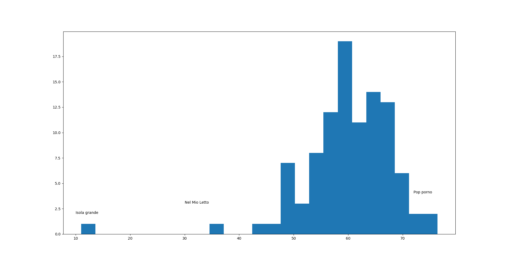
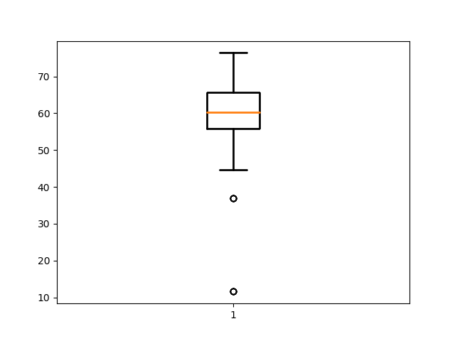

Matrici e Canzoni

Ci sono tantissimi modi di rappresentare parole, testi o anche il parlato. Una cosa che questi hanno in comune è il fatto che, esclusi modi di dire ed aforismi, è impossibile che due testi o discorsi siano uguali, questo perchè c'è molta variazione nelle parole e frasi in essi contenuti. Un'eccezione a ciò sono invece le poesie e le canzoni. Poesie e canzoni si basano sulla ripetizione non solo delle melodie, ma anche delle parole e frasi. In certi casi una canzone è la ripetizione di una sola frase, mentre in altri, più rari forse, le parole che si ripetono si contano su una mano.
Questo post mostrerà un'analisi della ripetitività delle 91 migliori canzoni italiane secondo Panorama (più 9 di una recente top 10 di MTV) ed è stato ispirato dal lavoro di Colin Morris, un linguista computazionale, che ha lavorato sulla ripetitività nelle canzoni e come rappresentarla.
Introduzione
L'idea, in generale, viene da Colin Morris, un linguista computazionale che ha fatto questa presentazione su TEDx e consiste nel riuscire a quantificare la ripetitività nelle canzoni e visualizzarla in maniera originale.
Una versione interattiva è disponibile sul suo sito web https://colinmorris.github.io/SongSim/
Come quantificare la ripetitività in una canzone
Un primo elementare problema si pone con l'unità di base stessa per l'analisi della ripetitività. Mentre per un libro parole e frasi possono andar bene, lo stesso non si può esattamente dire per le canzoni.
Quando si analizzano canzoni e poesie suffissi, prefissi, sillabe iniziali e finali possono contribuire alla ripetizione. Due parole non devono essere le stesse per causare una rima, anzi una rima fatta con due parole uguali è abbastanza triste.
Bisogna quindi andare un livello più in fondo e per questo motivo l'algoritmo LZ77, ideato per la compressione dati, è ottimo per avere un'idea della quantità di ripetitività in una canzone.
L'algoritmo riduce un file basandosi sulla ripetitività di set di caratteri.
Per poter fare ciò, basta usare in Linux il comando gzip verboso per poter comprimere un file ed avere la percentuale di compressione nel risultato
Quanto sono ripetitive queste 100 canzoni?
Da queste immagini si può notare che la maggior parte delle canzoni vengono compresse intorno al 60%. Ci sono alcune canzoni che però lo sono molto meno,


Con un sample di 100 canzoni, le canzoni italiane pop sono in media compressibili al 60%. Messa così sembra che ci sia una differenza fra le canzoni italiane e americane pop (che hanno una media del 50%), il sample è comunque molto piccolo ma ci da comunque informazioni su cosa abbiano in comune queste canzoni selezionate da "Panorama".
La canzone meno ripetitiva è Isola Grande di Pino Daniele, ma se si va a vedere il testo… Chiaramente questo è un outlier che forse farebbe bene ad essere escluso, e così la seconda meno ripetitiva è "Nel mio letto" dei Verdena.
La più ripetitiva invece è "Pop Porno" che può essere compressa al 76.4%.
Pattern di ripetitività
In bioinformatica si usano i dot plot, che sarebbero simili a delle heatmaps di matrici formate da due serie/vettori simili (chiamate self-similarity matrices). Il risultato è una rappresentazione dei punti in comune di questi vettori che ricorda alle volte i fiocchi di neve visti al microscopio.


Fare ciò è anche possibile non solo con il testo di una canzone ma anche con l'audio.
Conclusione & Slideshow
In questo link è possibile vedere diverse versioni dei dot plot che rappresentano le 100 canzoni. Il codice usato in Python lo condividerò appena ripulito nelle mie gists.
Cosa pensate di questo tipo di rappresentazioni? C'erano canzoni che vi aspettavate essere più o meno ripetitive? O magari ci sono composizioni con testi molto interessanti e particolari che andrebbero aggiunte? Prisencolinensinainciusol di Celentano è la prima che potrebbe venire in mente forse.